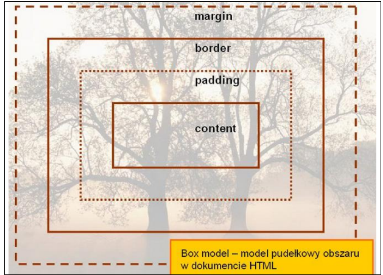

Model pudełkowy precyzuje graficzną strukturę elementów blokowych, takich jak p lub blockquote , na którą składają się zawartość (content), odstępy (padding), ramka (border) i marginesy (margins).
Wykonaj oraz uzupełnij tabelę:
zawartość
Opis
content
Styl definiuje tworzenie zawartości dokumentu.
padding
Styl definiuje wielkość dopełnienia dla elementu
border
Styl definiuje właściwości ramki
margins
Styl definiuje wielkość marginesu dla elementu
Podaj dwie uwagi na temat modelu pudełkowego.
Uwaga1:Padding, border i margin mogą mieć zerową wartość
Uwaga2:Tło elementu jest określone dla wszystkich z podanych powyżej obszarów z wyjątkiem
marginesów zewnętrznych, które zawsze są przezroczyste (transparent).
Wstaw grafikę obrazującą model pudełkowy.

)Wstaw grafikę obrazującą różnicę pomiędzy paddingiem i marginesem wraz z opisem..